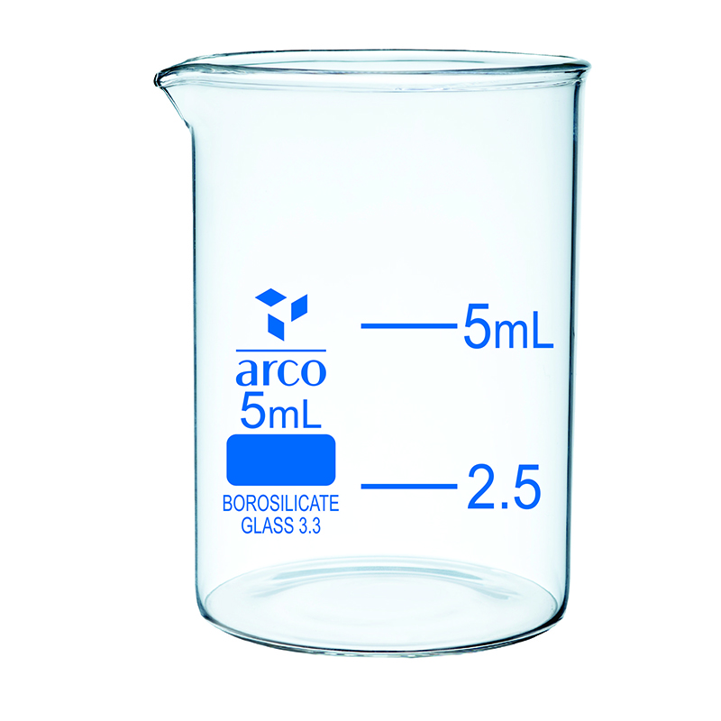

Beaker Low Form with Spout (Griffin Beaker)
ISO 3819 • DIN 12331 • Borosilicate Glass 3.3
Beaker standar industri dengan ketebalan dinding seragam untuk distribusi panas optimal. Ideal untuk pemanasan cairan, pencampuran larutan, dan titrasi kimia pada suhu hingga 500°C.
Kapasitas: 25 ml – 5000 ml
Boro 3.3 Thermal Shock Proof
Skala Terkalibrasi Putih Enamel
Spout Anti-Tetes